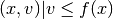
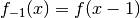
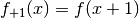
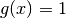
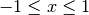

Hint
This page require to setup a Unicode monospaced font (e.g. DejaVu Sans Mono) for the browser. You also need an Unicode Terminal to display correctly the output of the code. To execude this code, best would be to use Ipython, an Interactive Python Console.
Load modules:
import numpy as np
from SimpleMorphoMath.SimpleMorphoMath1D import *
Create a new function f(x) and plot its umbra:
function = Function((5,7,6,9,9,4,5,10,8,9,8,6,3,5,7,9,2,6))
print function.plot(plot_type='umbra')
Result:
┌──┬──────────────────┐
│11│ │
│10│ ◼ │
│ 9│ ◼◼ ◼ ◼ ◼ │
│ 8│ ◼◼ ◼◼◼◼ ◼ │
│ 7│ ◼ ◼◼ ◼◼◼◼ ◼◼ │
│ 6│ ◼◼◼◼ ◼◼◼◼◼ ◼◼ ◼│
│ 5│◼◼◼◼◼ ◼◼◼◼◼◼ ◼◼◼ ◼│
│ 4│◼◼◼◼◼◼◼◼◼◼◼◼ ◼◼◼ ◼│
│ 3│◼◼◼◼◼◼◼◼◼◼◼◼◼◼◼◼ ◼│
│ 2│◼◼◼◼◼◼◼◼◼◼◼◼◼◼◼◼◼◼│
│ 1│◼◼◼◼◼◼◼◼◼◼◼◼◼◼◼◼◼◼│
└──┴──────────────────┘
The umbra of a function f(x) is the set of all values (x, v) such that value v is less than or equal to f(x): .
Translate on the left the function f(x): :
function_translated = function.clone().translate(-1)
print function_translated.plot(plot_type='umbra')
Result:
┌──┬──────────────────┐
│11│ │
│10│ ◼ │
│ 9│ ◼◼ ◼ ◼ ◼ │
│ 8│ ◼◼ ◼◼◼◼ ◼ │
│ 7│◼ ◼◼ ◼◼◼◼ ◼◼ │
│ 6│◼◼◼◼ ◼◼◼◼◼ ◼◼ ◼ │
│ 5│◼◼◼◼ ◼◼◼◼◼◼ ◼◼◼ ◼ │
│ 4│◼◼◼◼◼◼◼◼◼◼◼ ◼◼◼ ◼ │
│ 3│◼◼◼◼◼◼◼◼◼◼◼◼◼◼◼ ◼ │
│ 2│◼◼◼◼◼◼◼◼◼◼◼◼◼◼◼◼◼ │
│ 1│◼◼◼◼◼◼◼◼◼◼◼◼◼◼◼◼◼ │
└──┴──────────────────┘
The function is padded on the right with the infinimum of the function domain, thus zero.
Translate on the right the function f(x): :
function_translated = function.clone().translate(1)
print function_translated.plot(plot_type='umbra')
Result:
┌──┬──────────────────┐
│11│ │
│10│ ◼ │
│ 9│ ◼◼ ◼ ◼ ◼ │
│ 8│ ◼◼ ◼◼◼◼ ◼ │
│ 7│ ◼ ◼◼ ◼◼◼◼ ◼◼ │
│ 6│ ◼◼◼◼ ◼◼◼◼◼ ◼◼ │
│ 5│ ◼◼◼◼◼ ◼◼◼◼◼◼ ◼◼◼ │
│ 4│ ◼◼◼◼◼◼◼◼◼◼◼◼ ◼◼◼ │
│ 3│ ◼◼◼◼◼◼◼◼◼◼◼◼◼◼◼◼ │
│ 2│ ◼◼◼◼◼◼◼◼◼◼◼◼◼◼◼◼◼│
│ 1│ ◼◼◼◼◼◼◼◼◼◼◼◼◼◼◼◼◼│
└──┴──────────────────┘
The function is padded on the left with zero.
Let’s dilate the function f(x) by the so-called unit-ball structuring element  over the range :, 0 otherwise:
function_dilated = Function(function)
function_dilated.dilate(unit_ball)
print function_dilated.plot(plot_type='umbra')
Result:
┌──┬──────────────────┐
│11│ │
│10│ ◼◼◼ │
│ 9│ ◼◼◼◼◼◼◼◼◼ ◼◼◼ │
│ 8│ ◼◼◼◼◼◼◼◼◼◼ ◼◼◼ │
│ 7│◼◼◼◼◼◼◼◼◼◼◼◼ ◼◼◼◼ │
│ 6│◼◼◼◼◼◼◼◼◼◼◼◼◼◼◼◼◼◼│
│ 5│◼◼◼◼◼◼◼◼◼◼◼◼◼◼◼◼◼◼│
│ 4│◼◼◼◼◼◼◼◼◼◼◼◼◼◼◼◼◼◼│
│ 3│◼◼◼◼◼◼◼◼◼◼◼◼◼◼◼◼◼◼│
│ 2│◼◼◼◼◼◼◼◼◼◼◼◼◼◼◼◼◼◼│
│ 1│◼◼◼◼◼◼◼◼◼◼◼◼◼◼◼◼◼◼│
└──┴──────────────────┘
Plot with the original function as mask:
print function_dilated.plot(plot_type='umbra', mask=function)
Result:
┌──┬──────────────────┐
│11│ │
│10│ ●◼● │
│ 9│ ●◼◼●●◼●◼● ●◼● │
│ 8│ ●◼◼●●◼◼◼◼● ●◼● │
│ 7│●◼●◼◼●●◼◼◼◼● ●◼◼● │
│ 6│●◼◼◼◼●●◼◼◼◼◼●●◼◼●◼│
│ 5│◼◼◼◼◼●◼◼◼◼◼◼●◼◼◼●◼│
│ 4│◼◼◼◼◼◼◼◼◼◼◼◼●◼◼◼●◼│
│ 3│◼◼◼◼◼◼◼◼◼◼◼◼◼◼◼◼●◼│
│ 2│◼◼◼◼◼◼◼◼◼◼◼◼◼◼◼◼◼◼│
│ 1│◼◼◼◼◼◼◼◼◼◼◼◼◼◼◼◼◼◼│
└──┴──────────────────┘
Recompute the dilation using the point wise maximum of the set of translated corresponding to the structuring element:
function_dilated = Function(function)
for offset in -1, 1:
function_dilated.pointwise_max(function.clone().translate(offset))
print function_dilated.plot(plot_type='umbra', mask=function)
Result:
┌──┬──────────────────┐
│11│ │
│10│ ●◼● │
│ 9│ ●◼◼●●◼●◼● ●◼● │
│ 8│ ●◼◼●●◼◼◼◼● ●◼● │
│ 7│●◼●◼◼●●◼◼◼◼● ●◼◼● │
│ 6│●◼◼◼◼●●◼◼◼◼◼●●◼◼●◼│
│ 5│◼◼◼◼◼●◼◼◼◼◼◼●◼◼◼●◼│
│ 4│◼◼◼◼◼◼◼◼◼◼◼◼●◼◼◼●◼│
│ 3│◼◼◼◼◼◼◼◼◼◼◼◼◼◼◼◼●◼│
│ 2│◼◼◼◼◼◼◼◼◼◼◼◼◼◼◼◼◼◼│
│ 1│◼◼◼◼◼◼◼◼◼◼◼◼◼◼◼◼◼◼│
└──┴──────────────────┘
Erode by the unit ball:
function_eroded = Function(function)
function_eroded.erode(unit_ball)
print function_eroded.plot(plot_type='umbra', mask=function)
Result:
┌──┬──────────────────┐
│11│ │
│10│ ◻ │
│ 9│ ◻◻ ◻ ◻ ◻ │
│ 8│ ◻◻ ◻◼◼◻ ◻ │
│ 7│ ◻ ◻◻ ◻◼◼◻ ◻◻ │
│ 6│ ◻◼◼◻ ◻◼◼◼◻ ◻◻ ◻│
│ 5│◼◼◼◼◻ ◻◼◼◼◼◻ ◻◼◻ ◻│
│ 4│◼◼◼◼◼◼◼◼◼◼◼◻ ◻◼◻ ◻│
│ 3│◼◼◼◼◼◼◼◼◼◼◼◼◼◼◼◻ ◻│
│ 2│◼◼◼◼◼◼◼◼◼◼◼◼◼◼◼◼◼◼│
│ 1│◼◼◼◼◼◼◼◼◼◼◼◼◼◼◼◼◼◼│
└──┴──────────────────┘